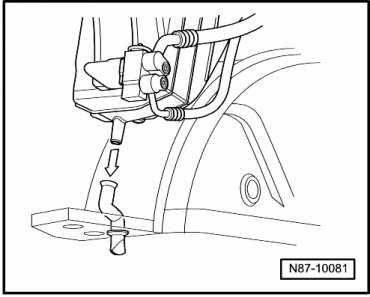

Rear Condensation Water Hose with Valve, Checking
Rear Condensation Water Hose with Valve, Checking

• Condensation water hose must fit securely on connection of heating & A/C unit.
• Valve may not be bonded by wax or underbody protection, it must close correctly.
• Condensation water hose to valve must not be kinked or pinched.
- Check valve from below when vehicle is raised.